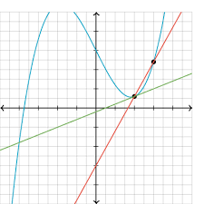
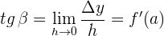
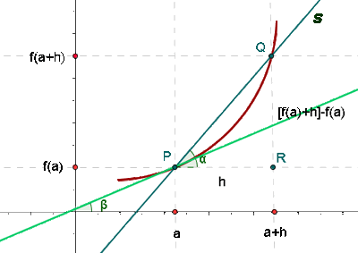
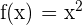
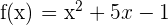
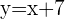
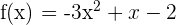
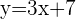
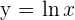

- Se Divide a los estudiantes en equipos y se les proporciona a cada equipo una función diferente.
- Se les Pide a los estudiantes que, utilizando calculadoras gráficas (GeoGebra), tracen la gráfica de su función y encuentren la ecuación de la recta tangente en un punto dado
- El docente presenta una demostración formal de la fórmula de la recta tangente utilizando el concepto de límite y la derivada.
- El docente resuelve problemas prácticos junto a los estudiantes, como encontrar la ecuación de la recta tangente a una parábola en su vértice, y a una curva exponencial en un punto específico.
- Dada la parábola , hallar los puntos en los que la recta tangente es paralela a la bisectriz del primer cuadrante.
- Dada la parábola , hallar los puntos en los que la recta tangente es paralela a la bisectriz del segundo cuadrante.
- Dada la parábola , hallar los puntos en los que la recta tangente es paralela a la recta .
- Dada la parábola , hallar los puntos en los que la recta tangente es paralela a la recta .
- ¿En qué punto de la curva , la tangente es paralela a la cuerda que une los puntos (1, 0) y (e, 1)?